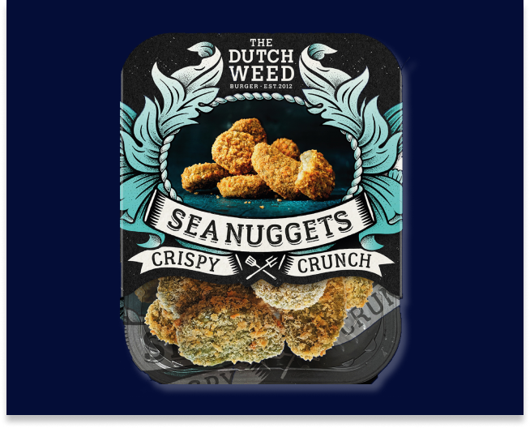

De Duurzaamste Burger van Nederland!
The Dutch Weed Burger is een van de gezondste hamburgers ter wereld, met zeewier als lekkere smaakmaker! De malse patty is gemaakt van eiwitrijke, zilte sojasnippers en het krachtige winterwier Royal Kombu, dat duurzaam wordt geteeld in Nationaal Park Oosterschelde. De knapperig geroosterde Weed Bun kleurt heldergroen van de chlorella, en micro-alg stampvol goede eiwitten en omega vetzuren. De smaak wordt vervolmaakt door onze eigen, fris romige Weed Sauce. Deze wordt gemaakt van biologische ingrediënten en is verrijkt met een prachtige, duurzame zeesla. Dit frisse zomerwier komt ook uit de Oosterschelde. De Dutch Weed Burger is volledig plantaardig. En daarmee vegetarisch en veganistisch. EAT WEED LIVE LONG!
Bereidingswijze
Koekenpas: 5-7 minuten bakken op middelhoog vuur. Regelmatig omkeren.
BBQ: Weed Burger insmeren met olie en 7-9 minuten indirect grillen. Regelmatig omkeren. De burger is het lekkerst met een krokant laagje.
Bekijk alle receptenSea Nuggets
Crispy, crunchy, green & salty. Onder deze goudgroene, crunchy crust van de Sea Nuggets verschuilt een malse en sappige structuur. Gemaakt van peulvruchten en lokaal geteelde Royal Kombu zeewier flakes. De groene kleur komt van de populaire microalg Spirulina: een boost aan vitaminen en mineralen.
Bestel nu